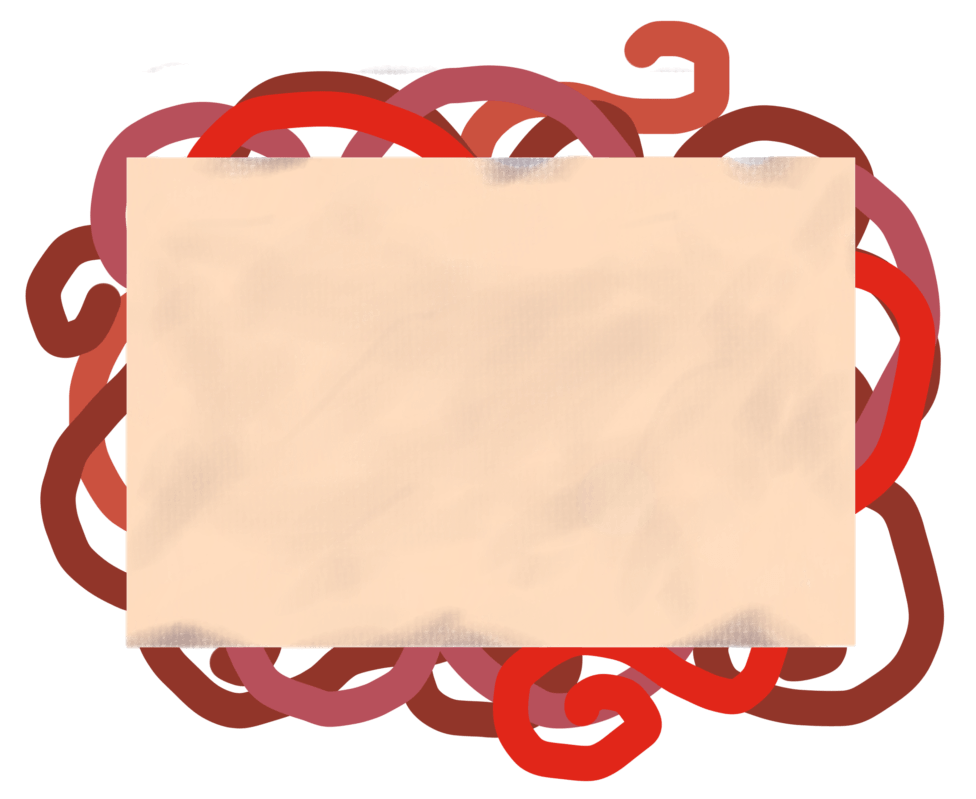
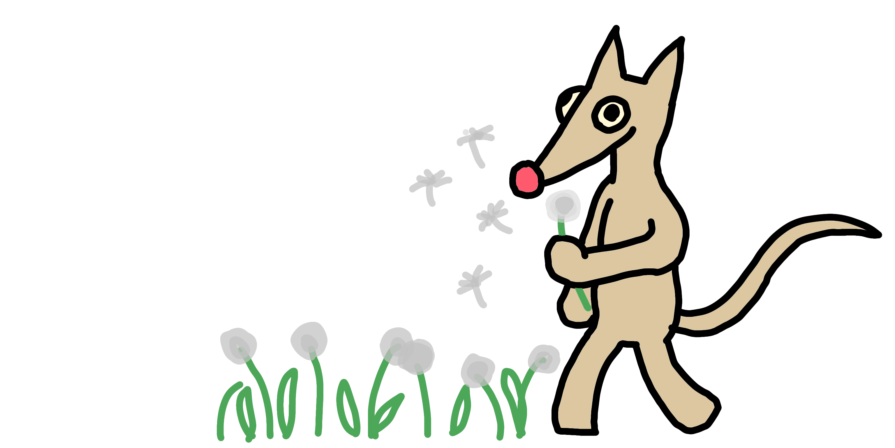

VERSION DEMO
RATS
FILMS
ACTUALITEES
Mentions Légales
L'ODYSSEE D'ATLAS (2024)
Synopsis ici

Viscérale Motion est une association
déposée en france sous la loi 1901,
sous le numero de siret 00000 se basant
à Aix en provence.
Elle a pour but le financement et la création
de projet audiovisuel par la vente
d'equipement associé.
RETOUR

COPYRIGHT Viscerale Motion 2026
Mentions légales
A propos
Aide